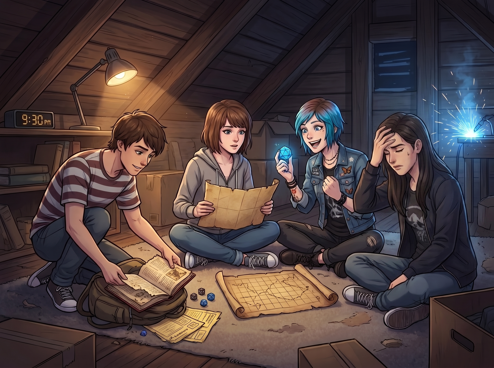
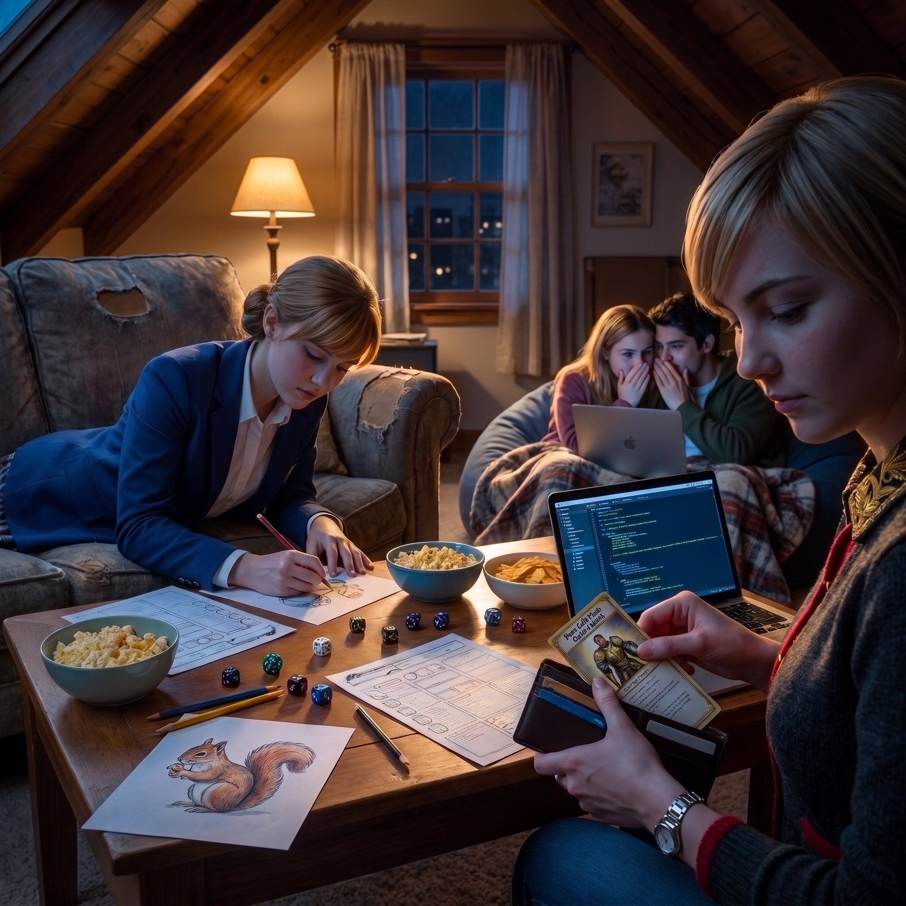

地下城戰隊重組


深夜九點半，工坊二樓的閣樓。
地毯正中央鋪上了一張邊角微卷、畫著羊皮紙網格的地圖，那是當年高中「極客之夜」留下來的跑團老地圖。
Warren 像個挖出傳家寶的考古學家，激動地從雙肩包深處掏出了一整套磨損的二十面骰、鉛筆、幾張泛黃的空白角色卡，以及一本被翻得起毛邊的規則書。
「天哪……」Brooke 扶著額頭笑著嘆了口氣，「我就知道你把這套東西隨身塞在筆記本電腦夾層裡。」
「老天爺！地下城戰隊重組？！」Chloe 的眼睛瞬間比工坊的氬弧焊火花還要亮。她一把拽著 Max 盤腿坐在羊皮紙地圖前，熟練地抓起一顆亮藍色二十面骰在指尖旋轉，「全體立正！今晚誰也不准去睡覺，老娘要重操舊業當我的『混亂中立·重型狂暴野蠻人』！」
一、角色卡創建
在地下城城主 Warren 的引導下，六個人的角色卡呈現出一種荒誕卻極度符合人設的奇妙陣容。
Chloe——陣營：混亂中立。武器：一把比人還高的精鋼雙手巨錘。口頭禪：「別跟我廢話什麼陷阱檢定，老娘一錘砸開這扇該死的門！」
Max——陣營：守序善良。預言學派法師，法術位全點了「護盾術」、「偵測魔法」與「預知危險」，堅決不選任何直接攻擊法術，只負責在後排給隊友上 Buff。
Victoria——原本滿臉嫌棄的名媛，在看到角色卡上有「貴族出身」和「全身鍍金板甲」選項後，勝負欲瞬間爆棚。她優雅地握著鉛筆，冷冷地填寫背景故事：「我的坐騎必須是純血白馬，任何未經審計的戰利品分配都視為對神聖秩序的褻瀆。」
Kate——陣營：絕對善良。生命領域牧師，特長群體治療術、安撫動物、淨化毒素，甚至在角色卡的小寵物欄裡認真畫了一隻帶光環的治癒小松鼠。
Brooke——陣營：守序中立。奇械師，完全不按傳統魔法出牌，自帶一隻用發條和齒輪改裝的機械巡航魔寵，負責遠程偵察與弱點分析。
二、跑團高潮
冒險剛進入第一個關卡——銹蝕的矮人黃銅閘門，修羅場就徹底拉開了序幕。
Brooke 扶了扶眼鏡：「我派遣機械魔寵進行天花板紅外掃描，敏捷檢定——骰出了 18，發現右側立柱有機關插銷。」
Chloe 根本等不及：「插什麼銷！老娘直接狂暴！雙手握錘，力量檢定砸門！」
Chloe 猛地將二十面骰甩在大地毯上——「自然 20！」
Warren 一拍大腿，激動得差點把茶杯打翻：「伴隨著一聲巨響！Chloe 的巨錘直接把兩噸重的黃銅大門連同門框從牆上硬生生轟成了碎片！」
進入堡壘中庭，一隻龐大的「銹蝕鋼鐵巨像」轟然蘇醒。Victoria 昂起下巴，握緊手裡的骰子：「以正義之神之名，我對巨像發動至聖斬！」
骰子在地圖上骨碌碌滾動……最終停在了一個血紅色的數字上——「自然 1！」
全場空氣瞬間安靜了兩秒。
Chloe 當場爆發出驚天動地的狂笑：「哈哈哈哈哈！大失敗！大股東！妳的寶劍砍在自己的靴子上了嗎？！」
Warren 憋著笑，極其專業地描述：「呃……Victoria 踏出神聖步伐時，因為板甲保養過度過於光滑，腳底一滑，整個人連人帶甲摔進了地精剛倒下的排泄物泥坑裡，陷入兩回合僵直。」
Victoria 的臉色在一秒內由白轉紅，羞憤得差點當場撕掉角色卡：「Warren！你的系統判定存在嚴重的演算法偏差！」
「別怕，Victoria！」Kate 連忙笑瞇瞇地丟出一枚 20 面骰，溫柔地說道，「我對 Victoria 施放高等淨化術與天使庇護光環，不僅洗乾淨了泥巴，還讓她的金甲發出耀眼的神聖光芒哦！」
三、絕殺回合
面對巨像最後的反撲，戰鬥進入了高潮。Max 發動預言學派被動【時間倒流】，成功預測了巨像的橫掃攻擊，大喊著提醒全隊後跳規避；Brooke 的發條魔寵投擲燃燒彈，引爆了巨像胸口的冷卻液閥門；得到 Kate 神聖 Buff 的 Victoria 咬牙揮劍挑開巨像的核心護甲，Chloe 則發動最後的狂暴跳劈，一記重錘狠狠砸在核心齒輪上！
「轟——！！」
Warren 誇張地發出爆炸聲效：「巨像轟然倒塌！化作滿地閃閃發光的黃銅齒輪與稀有附魔寶石！」
四、閣樓上的深夜溫存
遊戲結束時，時鐘已經悄然指向了凌晨一點半。
六個人毫無形象地癱倒在厚厚的地毯與靠墊堆裡，身邊散落著空可樂罐、咬了一半的肉桂卷與記滿搞笑數值的角色卡。
Victoria 雖然嘴上一直在挑剔遊戲的平衡性，但嘴角卻始終掛著放鬆的弧度，甚至把那張寫著「純金板甲聖騎士」的角色卡小心翼翼地夾進了自己的私人皮夾裡；Kate 靠在沙發邊，正拿著鉛筆給那隻「治癒小松鼠」塗上顏色；Warren 和 Brooke 則擠在同一條毛毯下，小聲討論著如何用程式編寫一套自動判定跑團數值的算法。
Max 端起相機，對著這間堆滿了骰子、歡笑與青春回憶的溫暖閣樓，按下了快門。
「咔嚓。」
Chloe 揉了揉酸痛的肩膀，很自然地把手臂搭在 Max 的脖頸上，另一隻手把玩著那顆立了大功的亮藍色骰子，低聲笑道：「喂，考菲爾德長官……要是當年我們就能有這麼一套無敵的陣容，大概連龍捲風都能被我們用大成功骰子給當場吹散吧？」
Max 笑著把頭靠在 Chloe 的肩膀上，握緊了她的手：「但至少現在，我們投出的是我們自己想要的結局。」
窗外，波特蘭東區的夜色溫柔深邃，而這座充滿了鋼鐵、藝術與老友笑語的閣樓，在初秋的深夜裡，閃爍著永不熄滅的溫暖微光。